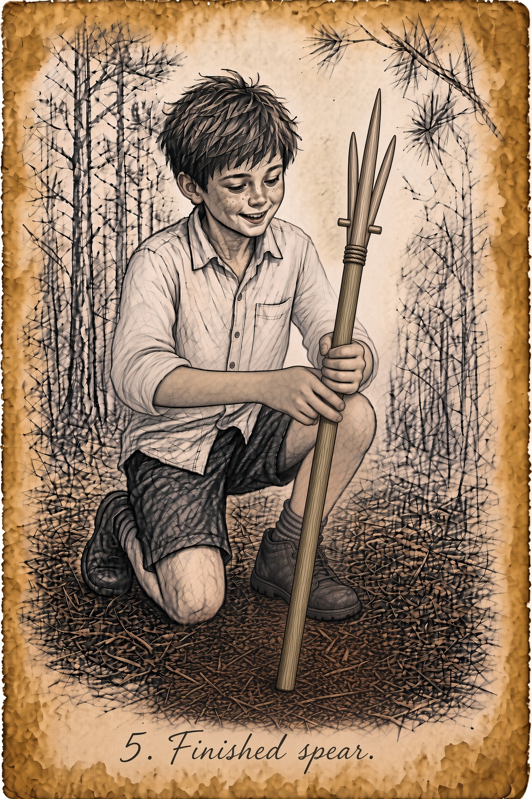
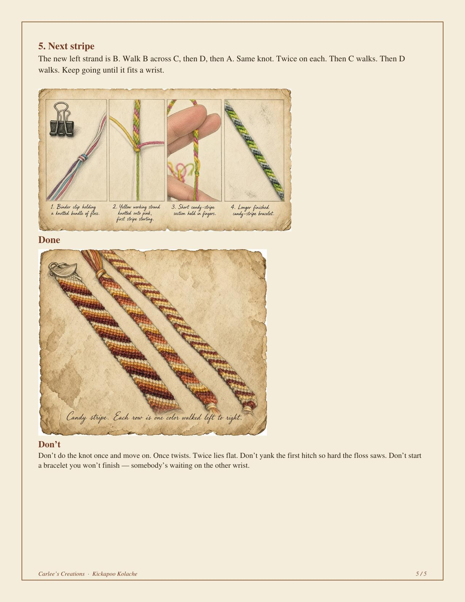

Essentials
Scripture, almanac tip, This Day in History, and joke.
Brownsboro & Chandler. Neighbors first.
Good news from Brownsboro and Chandler: neighbors, events and people making our community better. Why we exist
Digital Edition · Est. 2026
Scripture, almanac tip, This Day in History, and joke.
Jake Ham and his students earned a second straight fifth-place finish in the state’s 4A military marching finals, with teamwork and hometown support.
From a painter's van to the president's chair, Chris Owens has found his calling in rolling up his sleeves for the little town he loves.
Council Member Bob Valliere on building on the work of those who came before, and why Chandler is still a city with a heart.
For 13 years, Sherry Parker and a team of volunteers have quietly sent food home with Brownsboro ISD students every week, and they’d love your help.
In 1845, a band of Norwegian pioneers put down roots just outside today’s Brownsboro. One of them carved gravestones by hand for the little colony’s cemetery.
Texas State Parks Director Rodney Franklin shares the timeline, the planning work under way, and how Brownsboro and Chandler neighbors can get involved.
Neighbor story tip? editor@kickapookolache.com
One featured partner at a time (separate from the Local Businesses directory).
Want the spotlight? Get listed
636 Hwy 31 E Ste A, Chandler TX 75758
anytimefitness.com/locations/chandler-texas-1912 · (903) 849-3700
Veteran-owned websites & IT for East Texas shops. Brownsboro–Chandler neighbors welcome.
Bookkeeping, QuickBooks support, notary and small-business services.
4gracesolutions.com · (903) 521-1450 · 4gracesolutions@gmail.com
Request a Local Businesses directory card. Request a listing

Homemade Four-Point Spear — Four points beat one. You don’t have to hit perfect. You pin.

Friendship Bracelets — Candy stripe. Four colors. One knot, done twice, walked left to right. Make two. Keep one. Give one.
Neighbor column pitches welcome. Pitch a column / Request a column slot
Loading Chandler News Flash headlines…
Loading Brownsboro official links…
School headlines, calendar, and ParentSquare…
Civic notes appear here when filed.
Loading live MaxPreps links…
Local Updates: official notices and feeds from the cities and county.
Tell us about someone making Brownsboro or Chandler better: a neighbor, a volunteer, a business doing good, an event worth celebrating.
Send us a good neighbor tip or write editor@kickapookolache.com